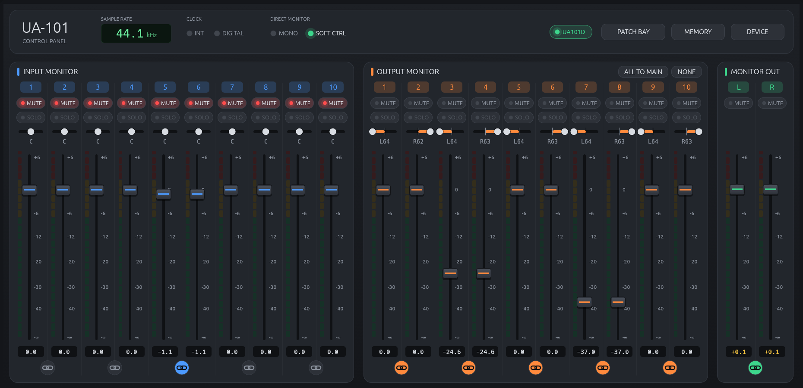
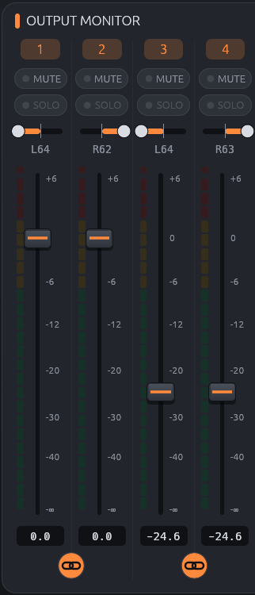
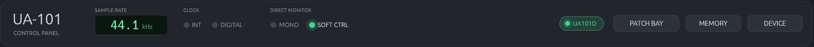

Your UA-101, back on Linux
A Rust driver with the full mixer: ten outputs, twelve inputs.
curl -fsSL https://raw.githubusercontent.com/devfrp/ua101-rs/main/packaging/linux/install.sh | sh
The control panel, rebuilt
Decoded from Roland’s original Windows driver, drawn as one console.
Panel source


Every fader is a SysEx message
Roland DT1 and RQ1 on USB-MIDI cable 1, model 00 69.
F0 41 10 00 69 12 00 05 00 07 01 00 00 00 00 00 73 F7F0 41 10 00 69 12 00 05 00 03 04 00 00 00 74 F7F0 41 10 00 69 12 00 05 00 02 01 78 F7F0 41 10 00 69 12 00 04 00 01 01 7A F7F0 41 10 00 69 11 02 00 00 00 00 00 02 00 7C F7
- Output 1 volume, 0 dB
- Output 1 pan, centre
- Output 1 mute
- Link inputs 1 and 2
- Read the whole mixer, 256 bytes
How each address was found: protocol notes.
What runs where
| System | Audio | Panel and MIDI | Needs |
|---|---|---|---|
| Linux | 10 out, 12 in through PipeWire or ALSA | Yes | The installer |
| Windows | In progress | Yes | WinUSB bound with Zadig |
| macOS | In progress | Yes | Nothing |
Before you plug in
- Do I need Roland’s driver?
- No, nothing from Roland ships here.
- Which sample rates?
- The unit’s switch. 44.1 kHz is verified, the others are next.
- Where does the patch bay run?
- Inside ua101d, about 8 ms late.
- Does it crackle when the computer is busy?
- No. Since 0.2.0 the audio threads run in real time through RealtimeKit.
- Is there a driver for Apple silicon Macs?
- Audio on macOS is in progress here. delta90h/ua101-mac has one validated on M1 and later.
Install in one line
curl -fsSL https://raw.githubusercontent.com/devfrp/ua101-rs/main/packaging/linux/install.sh | sh
Then systemctl --user enable --now ua101d and open ua101-panel.
| File | For | Size |
|---|---|---|
ua101-linux-x86_64.tar.gz | Linux | 6.8 MB |
ua101-linux-aarch64.tar.gz | Linux on ARM | 6.2 MB |
ua101-linux-x86_64-musl.tar.gz | Alpine, no panel | 2.8 MB |
ua101-panel-windows-x86_64.exe | Windows panel | 7.5 MB |
ua101-macos-universal.dmg | macOS panel | 8.6 MB |